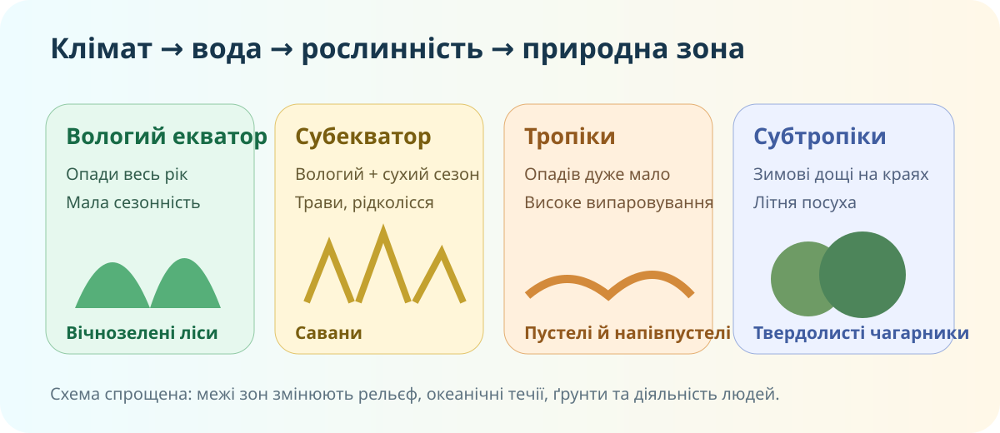
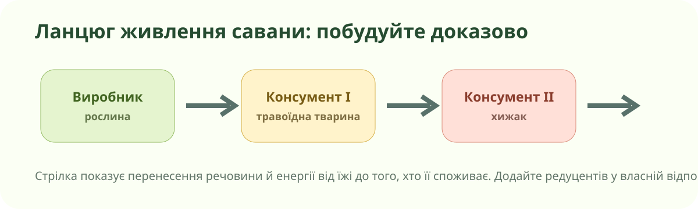

1. Спершу — реальна карта, не підписані зони
OpenStreetMap. Масштабуйте карту й дивіться не лише на колір фону: річкова мережа, поселення, висоти та тип землекористування дають додаткові докази.
Для кожної точки запишіть 2–3 ознаки, які можна побачити на карті або супутниковому знімку, і припустіть природну зону. Не використовуйте назву зони як доказ самої себе.
2. Зіставте клімат і природну зону

Локальна навчальна схема. Вона показує причинний механізм, а не точні межі зон.
Кліматичні «станції»
Оберіть набір даних. Спробуйте передбачити зону до натискання «перевірити».
3. Перевірте закономірність на реальних ландшафтах


Басейн Конго, постійне тепло й волога.
Сезонність дощів, високі трави, дерева.
Сахара, Наміб, Калахарі — але з різними причинами сухості.
Побачите, який саме доказ потрібно шукати на кліматичній карті.
4. Чому симетрія зон не ідеальна?
Правило
Африка перетинається екватором майже посередині. Від екватора до тропіків змінюються циркуляція атмосфери й режим опадів, тому багато зон повторюються на північ і південь.
Океанічні течії, висота, рельєф, відстань від океану, ґрунти, пожежі й землекористування зміщують межі. Наміб, наприклад, пов’язана не лише з тропічною широтою, а й із холодною Бенгельською течією.
Фальсифікація простого правила
Твердження: «На однаковій широті природна зона завжди однакова».
5. Савана як система: побудуйте ланцюг живлення

Стрілка йде від їжі до споживача, бо показує перенесення речовини та енергії.
Складіть один екологічно можливий ланцюг. Не обирайте організми лише тому, що вони «живуть в Африці» — вони мають взаємодіяти.
6. Коротке відео з КТП
Запишіть лише три речі: 1) яку закономірність підтверджує відео; 2) який виняток/уточнення показує; 3) який кадр можна було б використати як доказ.
Відео зазначене в ресурсах КТП до теми природних зон Африки.
7. Тепер систематизуємо теорію
Головна закономірність
Природна зона — великий зональний природний комплекс із закономірним поєднанням клімату, ґрунтів, рослинності й тваринного світу. В Африці зональність особливо виразна через її положення по обидва боки екватора.
Від екватора загалом простежується послідовність: вологі екваторіальні ліси → савани й рідколісся → тропічні пустелі та напівпустелі → субтропічні твердолисті ліси й чагарники.
Чому межі нерівні
Широта задає фон, але реальну межу змінюють кількість і сезонність опадів, морські течії, рельєф і висота, континентальність, ґрунти та діяльність людей. У горах широтна зональність додатково змінюється вертикальною поясністю.
8. CER — доведіть, а не повторіть правило
Твердження для оцінки: «Розміщення природних зон Африки повністю визначає широта».
9. Домашнє дослідження
Обов’язково
Опрацюйте тему в електронному підручнику Гільберг — Довгань — Совенко, 7 клас (Генеза, 2024), розділ про природні зони Африки.
Міні-дослідження
Оберіть дві точки Африки на близькій широті. У Copernicus Browser або NASA Worldview порівняйте рослинний покрив. Додайте скриншот/посилання й 4–6 речень: чому ландшафти однакові або різні?
10. Тест — 10 балів
Тест відкриється лише після заповнення всіх трьох полів.